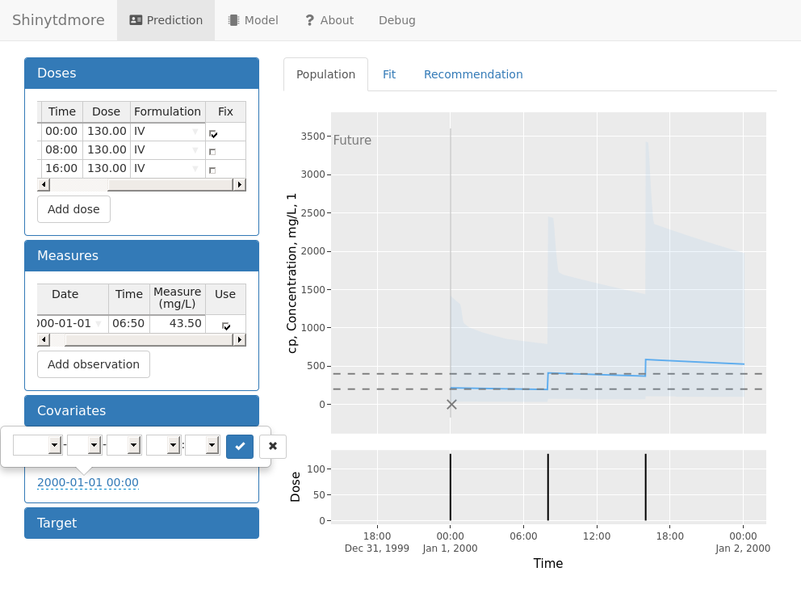

## Package shinytdmore is not available. Installing new version...
## Installing temporary version of shinytdmoreIntroduction
Shinytdmore helps you build an application for dose adaptation. This vignette will take you through the application step-by-step.
Add the posology
 When you add a dose, the default formulation in the model is used. Clicking add dose multiple times will add new doses with the right interdose interval.
When you add a dose, the default formulation in the model is used. Clicking add dose multiple times will add new doses with the right interdose interval.
Add an observation

The observation is not used yet, because the current time (“now”) is still 1st of January at midnight.
Changing the now time

The observation is now taken into account. From the population plot, we see that this individual has relatively low concentrations with regards to the starting dose.

Final debug log
## S/I 15:12:43.00 window.shinytest loaded
## S/I 15:12:43.00 already connected
## S/I 15:12:43.00 waiting for first output
## S/I 15:12:43.00 busy
## B/I 15:12:43.88 find (:)
## B/I 15:12:43.90 find (:)
## B/I 15:12:43.90 getId (:)
## B/I 15:12:43.90 getValue (:)
## B/I 15:12:43.90 subscribe (:)
## B/I 15:12:44.84 find (:)
## B/I 15:12:44.84 find (:)
## S/I 15:12:47.00 idle
## S/I 15:12:47.00 Found message with values field.
## S/I 15:12:47.00 value prediction-doses-table-table
## S/I 15:12:47.00 value prediction-observation-table-table
## S/I 15:12:47.00 value prediction-plots-population
## S/I 15:12:48.00 busy
## S/I 15:12:48.00 idle
## S/I 15:12:48.00 busy
## S/I 15:12:48.00 idle
## S/I 15:12:48.00 inputQueue: adding prediction-doses-add
## S/I 15:12:48.00 inputQueue: flushing prediction-doses-add
## S/I 15:12:48.00 busy
## B/I 15:12:48.08 setValue (:)
## B/I 15:12:48.08 save (:)
## B/I 15:12:48.12 getId (:)
## B/I 15:12:48.12 getValue (:)
## S/I 15:12:49.00 idle
## S/I 15:12:49.00 Found message with values field.
## S/I 15:12:49.00 value prediction-doses-table-table
## S/I 15:12:49.00 value prediction-plots-population
## S/I 15:12:49.00 busy
## S/I 15:12:49.00 idle
## S/I 15:12:49.00 busy
## S/I 15:12:49.00 idle
## S/I 15:12:49.00 inputQueue: adding prediction-doses-add
## S/I 15:12:49.00 inputQueue: flushing prediction-doses-add
## S/I 15:12:49.00 busy
## S/I 15:12:50.00 idle
## S/I 15:12:50.00 Found message with values field.
## S/I 15:12:50.00 value prediction-doses-table-table
## S/I 15:12:50.00 busy
## S/I 15:12:50.00 idle
## S/I 15:12:50.00 busy
## S/I 15:12:50.00 idle
## S/I 15:12:50.00 inputQueue: adding prediction-doses-add
## S/I 15:12:50.00 inputQueue: flushing prediction-doses-add
## S/I 15:12:50.00 busy
## S/I 15:12:51.00 idle
## S/I 15:12:51.00 Found message with values field.
## S/I 15:12:51.00 value prediction-doses-table-table
## S/I 15:12:51.00 busy
## S/I 15:12:51.00 idle
## S/I 15:12:51.00 busy
## S/I 15:12:51.00 idle
## S/I 15:12:51.00 busy
## S/I 15:12:52.00 idle
## S/I 15:12:52.00 busy
## S/I 15:12:52.00 idle
## S/I 15:12:53.00 busy
## S/I 15:12:53.00 idle
## S/I 15:12:53.00 busy
## S/I 15:12:53.00 idle
## S/I 15:12:53.00 busy
## S/I 15:12:53.00 idle
## S/I 15:12:53.00 busy
## B/I 15:12:53.73 find (:)
## B/I 15:12:53.73 find (:)
## S/I 15:12:54.00 inputQueue: adding prediction-observation-add
## S/I 15:12:54.00 inputQueue: flushing prediction-observation-add
## S/I 15:12:55.00 idle
## S/I 15:12:55.00 Found message with values field.
## S/I 15:12:55.00 value prediction-plots-population
## S/I 15:12:55.00 busy
## B/I 15:12:55.33 find (:)
## B/I 15:12:55.33 find (:)
## S/I 15:12:56.00 idle
## S/I 15:12:56.00 value prediction-plots-population
## S/I 15:12:56.00 busy
## S/I 15:12:56.00 idle
## S/I 15:12:56.00 busy
## S/I 15:12:56.00 idle
## S/I 15:12:56.00 busy
## S/I 15:12:56.00 idle
## S/I 15:12:56.00 busy
## S/I 15:12:56.00 idle
## S/I 15:12:57.00 value prediction-observation-table-table
## S/I 15:12:57.00 value prediction-plots-population
## S/I 15:12:57.00 busy
## S/I 15:12:57.00 idle
## S/I 15:12:57.00 busy
## S/I 15:12:58.00 idle
## S/I 15:12:58.00 busy
## S/I 15:12:58.00 idle
## S/I 15:12:58.00 value prediction-plots-population
## S/I 15:12:58.00 busy
## S/I 15:12:58.00 idle
## B/I 15:12:58.55 save (:)
## B/I 15:12:58.57 getId (:)
## B/I 15:12:58.57 getValue (:)
## S/I 15:12:59.00 busy
## S/I 15:12:59.00 idle
## S/I 15:12:59.00 busy
## S/I 15:13:00.00 idle
## S/I 15:13:00.00 busy
## S/I 15:13:00.00 idle
## S/I 15:13:00.00 busy
## B/I 15:13:01.00 find (:)
## B/I 15:13:01.00 find (:)
## B/I 15:13:01.17 find (:)
## B/I 15:13:01.17 find (:)
## S/I 15:13:02.00 idle
## S/I 15:13:02.00 value prediction-plots-fit
## S/I 15:13:02.00 busy
## B/I 15:13:02.67 find (:)
## B/I 15:13:02.67 find (:)
## B/I 15:13:02.71 find (:)
## B/I 15:13:02.71 find (:)
## B/I 15:13:02.71 find (:)
## B/I 15:13:02.71 find (:)
## S/I 15:13:04.00 idle
## S/I 15:13:04.00 value prediction-plots-recommendation
## S/I 15:13:04.00 busy
## S/I 15:13:04.00 idle
## S/I 15:13:04.00 value prediction-recommendation-table-table
## S/I 15:13:04.00 busy
## S/I 15:13:04.00 idle
## C/I ----------- FIT update needed
## C/I ----------- FIT update needed
## C/I ----------- FIT update needed
## C/I ----------- Plot active, handler should resume
## C/I ----------- Calculating reactive plot
## C/I ----------- Calculating reactiveFit (population= TRUE )
## C/I ----------- Plot hidden, handler should suspend
## C/I ----------- Plot hidden, handler should suspend
## C/I ----------- Calculating reactive plot
## C/I ----------- Should plot repaint? REPAINT
## C/I ----------- [1] "Component \"yaxis2\": Component \"range\": Mean absolute difference: Inf"
## C/I ----------- [2] "Component \"yaxis2\": Component \"ticktext\": Lengths (0, 5) differ (string compare on first 0)"
## C/I ----------- [3] "Component \"yaxis2\": Component \"tickvals\": Numeric: lengths (0, 5) differ"
## C/I ----------- [4] "Component \"yaxis2\": Component \"categoryarray\": Lengths (0, 5) differ (string compare on first 0)"
## C/I ----------- [5] "Component \"margin\": Component \"l\": Mean relative difference: 1.6"
## C/I ----------- INITIALIZE, repaint required!
## C/I ----------- Calculating reactive plot
## C/I ----------- Should plot repaint? No repaint needed
## C/I ----------- UPDATE sufficient
## C/I ----------- Calculating reactive plot
## C/I ----------- Should plot repaint? No repaint needed
## C/I ----------- UPDATE sufficient
## C/I ----------- Calculating reactive plot
## C/I ----------- Should plot repaint? No repaint needed
## C/I ----------- UPDATE sufficient
## C/I ----------- FIT update needed
## C/I ----------- Calculating reactive plot
## C/I ----------- Calculating reactiveFit (population= TRUE )
## C/I ----------- Should plot repaint? REPAINT
## C/I ----------- [1] "Component \"xaxis\": Component \"range\": Mean relative difference: 2.091414e-07"
## C/I ----------- [2] "Component \"yaxis\": Component \"range\": Mean relative difference: 5.379825"
## C/I ----------- [3] "Component \"yaxis\": Component \"ticktext\": Lengths (5, 3) differ (string compare on first 3)"
## C/I ----------- [4] "Component \"yaxis\": Component \"ticktext\": 2 string mismatches"
## C/I ----------- [5] "Component \"yaxis\": Component \"tickvals\": Numeric: lengths (5, 3) differ"
## C/I ----------- [6] "Component \"yaxis\": Component \"categoryarray\": Lengths (5, 3) differ (string compare on first 3)"
## C/I ----------- [7] "Component \"yaxis\": Component \"categoryarray\": 2 string mismatches"
## C/I ----------- INITIALIZE, repaint required!
## C/I ----------- Calculating reactive plot
## C/I ----------- Should plot repaint? REPAINT
## C/I ----------- [1] "Component \"yaxis\": Component \"range\": Mean relative difference: 0.041555"
## C/I ----------- INITIALIZE, repaint required!
## C/I ----------- FIT update needed
## C/I ----------- FIT update needed
## C/I ----------- Calculating reactive plot
## C/I ----------- Should plot repaint? REPAINT
## C/I ----------- [1] "Component \"yaxis\": Component \"range\": Mean relative difference: 0.01336658"
## C/I ----------- INITIALIZE, repaint required!
## C/I ----------- Calculating reactive plot
## C/I ----------- Should plot repaint? No repaint needed
## C/I ----------- UPDATE sufficient
## C/I ----------- Calculating reactive plot
## C/I ----------- Should plot repaint? REPAINT
## C/I ----------- [1] "Component \"yaxis\": Component \"range\": Mean relative difference: 0.01319027"
## C/I ----------- INITIALIZE, repaint required!
## C/I ----------- No FIT update needed
## C/I ----------- FIT update needed
## C/I ----------- FIT update needed
## C/I ----------- Plot hidden, handler should suspend
## C/I ----------- Plot active, handler should resume
## C/I ----------- Calculating reactive plot
## C/I ----------- Calculating reactiveFit (population= TRUE )
## C/I ----------- Calculating reactiveFit (population= FALSE )
## C/I ----------- Plot hidden, handler should suspend
## C/I ----------- Plot active, handler should resume
## C/I ----------- Calculating reactive plot
## C/E ----------- Running application in test mode.
## C/E ----------- Loading required package: shiny
## C/E -----------
## C/E ----------- Listening on http://127.0.0.1:8418
## C/E ----------- Warning: Column `formulation` has different attributes on LHS and RHS of join
## C/E ----------- Warning in is.na(x) :
## C/E ----------- is.na() applied to non-(list or vector) of type 'closure'
## C/E ----------- Warning: Column `formulation` has different attributes on LHS and RHS of join
## C/E ----------- Warning in is.na(x) :
## C/E ----------- is.na() applied to non-(list or vector) of type 'closure'
## C/E ----------- Warning: Column `formulation` has different attributes on LHS and RHS of join
## C/E ----------- Warning in is.na(x) :
## C/E ----------- is.na() applied to non-(list or vector) of type 'closure'
## C/E ----------- Warning in is.na(x) :
## C/E ----------- is.na() applied to non-(list or vector) of type 'closure'